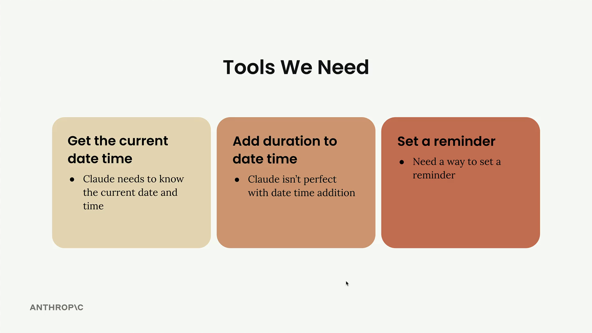
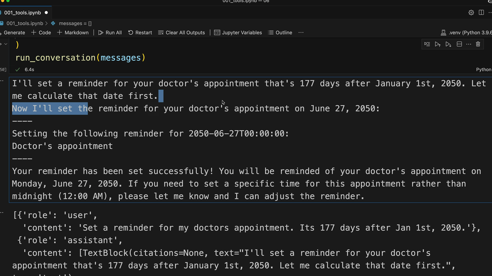
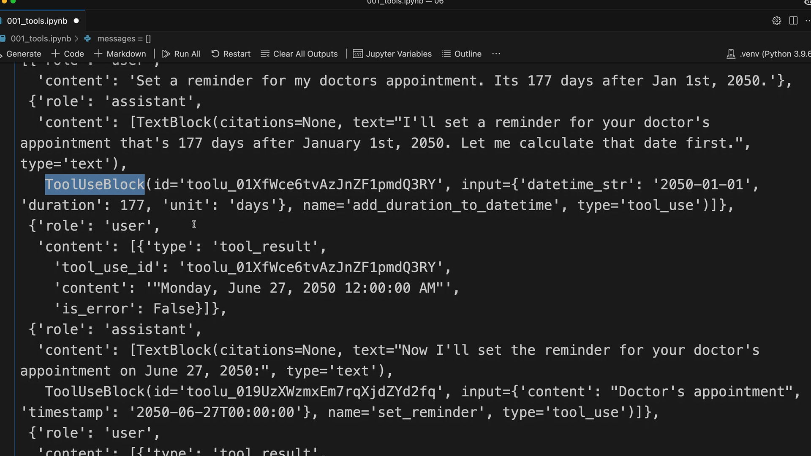

Несколько инструментов
Чему научитесь
Видео 3:38 и текст урока
К концу урока вы сможете:
- подключить в разговор несколько инструментов;
- расширить маршрутизатор
run_tool; - применять четырёхшаговый шаблон добавления нового инструмента.
Видео и текст урока.
Смотреть урок на Skilljar Using multiple tools · 3:38Когда основная инфраструктура для работы с инструментами готова, добавлять новые инструменты просто. Этот урок показывает, как подключить дополнительные инструменты по простому шаблону.

Какие инструменты добавляем
Для системы напоминаний нужны три возможности:
- Текущие дата и время — Claude должен знать текущие дату и время;
- Прибавить длительность к дате — Claude не идеален в сложении дат;
- Поставить напоминание — нужен способ ставить напоминания.
Хорошая новость: бо́льшая часть работы уже сделана. Функции add_duration_to_datetime и set_reminder даны готовыми вместе со схемами.
Добавляем инструменты в разговор
Сначала обновите функцию run_conversation, добавив новые схемы в список инструментов:
response = chat(messages, tools=[
get_current_datetime_schema,
add_duration_to_datetime_schema,
set_reminder_schema
])
Так Claude узнаёт обо всех трёх инструментах, доступных в разговоре.
Обновляем маршрутизатор
Затем измените функцию run_tool, чтобы она обрабатывала новые вызовы. Добавьте ветку elif для каждого нового инструмента:
def run_tool(tool_name, tool_input):
if tool_name == "get_current_datetime":
return get_current_datetime(**tool_input)
elif tool_name == "add_duration_to_datetime":
return add_duration_to_datetime(**tool_input)
elif tool_name == "set_reminder":
return set_reminder(**tool_input)
Шаблон простой: проверить имя инструмента, вызвать соответствующую функцию с переданными аргументами и вернуть результат.
Проверяем работу нескольких инструментов
Для проверки дайте запрос, которому нужно несколько инструментов: «Set a reminder for my doctors appointment. Its 177 days after Jan 1st, 2050.»
Этот запрос заставляет Claude:
- вычислить дату (через
add_duration_to_datetime); - поставить напоминание (через
set_reminder).

set_reminder печатает «Setting the following reminder for 2050-06-27T00:00:00: Doctor's appointment».Claude сначала объясняет, что собирается сделать, а затем по очереди вызывает нужные инструменты. В разговоре видно, как Claude вычисляет дату — 27 июня 2050 года — и ставит на неё напоминание.
Как устроен поток сообщений
Если посмотреть историю разговора, видна полная структура сообщений:
- сообщение пользователя с запросом;
- сообщение ассистента с текстом и блоками вызова инструментов;
- сообщения с результатами инструментов;
- последующие сообщения ассистента.

Это показывает, что Claude может включать в одно сообщение несколько блоков — пояснительный текст вместе с запросами инструментов.
Простой шаблон добавления инструментов
Когда основная инфраструктура для инструментов есть, новый инструмент добавляется так:
- написать реализацию функции-инструмента;
- описать схему инструмента;
- добавить схему в список инструментов в
run_conversation; - добавить ветку для инструмента в
run_tool.
Такой модульный подход позволяет расширять возможности ИИ-ассистента без перестройки существующего кода. Каждый новый инструмент встраивается в текущий ход разговора и логику обработки инструментов.
Дальше
Следующий урок — потоковая передача вызовов инструментов и fine-grained tool calling.
Оригинал урока: Using multiple tools.